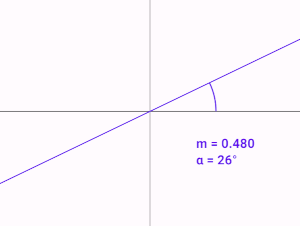
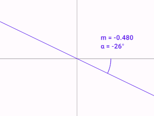
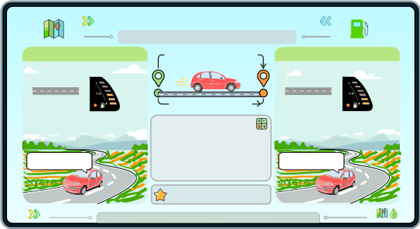
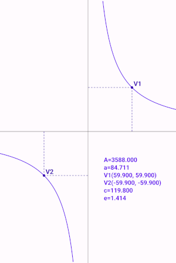
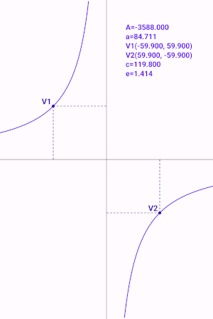
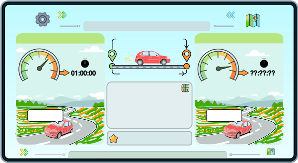

Direct proportionality describes the relationship between two quantities that vary together.
In mathematics, we say that two quantities—which vary together—are directly proportional if their ratio is constant.
Let's say one quantity is six and the other is three.
The quotient of these two quantities is two, that is, 6/3=2.
If we increase six to twelve, then—in order for the quotient of the two numbers to remain constant, that is, to remain two—we must also increase the other number, three: (6+6)/(3+3)=12/6=2. Six became twelve, and three became six, so the quotient remained constant—that is, it remained two.
The formula for direct proportionality: y1 / x1=y2 / x2. This formula is also called a ratio pair.
If we know three variables in a pair of ratios, we can find the value of the fourth variable using one of the following formulas (depending on which three of the four variables are known):
y1=x1y2 / x2 (where x2 cannot be zero),
x1=y1x2 / y2(where y2 cannot be zero),
y2=y1x2 / x1 (where x1 cannot be zero),
x2=x1y2 / y1 (where y1 cannot be zero).
If the quantities can be any real numbers, then the graph of this function is a line passing through the origin :
If the ratio of the two quantities is positive, then the line lies in the first and third quadrants; if this ratio is negative, then it lies in the second and fourth quadrants:


You can read more about direct proportionality at Wikipedia.
Direct proportionality can be applied in everyday life. See an example below!

If a car consumes an average of 6.2 gallons of gas over a distance of 100 mi, how many gallons would it consume over a distance of 147 mi? Using the formulas above:
y1=100 mi
x1=6,2 gal
y2=147 mi
x2=x1y2 / y1
x2=6,2×147 / 100=9,114 gallons.
Inverse proportionality describes the relationship between two quantities that vary together.
In mathematics, we say that two quantities—which vary together—are inversely proportional if their product is constant.
Let's say one quantity is six and the other is three.
The product of these two quantities is eighteen, that is, 6×3=18.
If we increase the six to nine, then—so that the product of the two numbers remains constant, that is, eighteen—we must decrease the other number, the three: (6+3)×(3-1)=9×2=18. Six became nine, and three became two, so the product remained constant—that is, eighteen.
The formula for inverse proportionality: y1x1=y2x2.
If we know three of the variables in this formula, we can find the value of the fourth variable using one of the following formulas (depending on which three of the four variables are known):
y1=y2x2 / x1,
x1=y2x2 / y1,
y2=y1x1 / x2,
x2=y1x1 / y2,
where the values of y1, x1, y2, and x2 cannot be zero.
If the quantities can be any real numbers other than zero, then this function can be represented by a hyperbola. If the product of the two quantities is positive, then the branches of the hyperbola lie in the first and third quadrants; if this product is negative, then they lie in the second and fourth quadrants:


You can read more about inverse proportionality on Wikipedia.
Inverse proportionality can be applied in everyday life.
See an example below!
If a car travels a certain distance in 1 hour at a speed of 80 mph, how many hours will it take to travel the same distance at a speed of 90 mph? Using the formulas above:
y1=80 mph
x1=1 h
y2=90 mph
x2=y1x1 / y2
x2=80×1/90=0.88888 h.